大模型实战营第五次课笔记
这是大模型实战营第五次课的笔记
背景知识
大模型部署背景
- 大模型部署简介 & 大模型特点
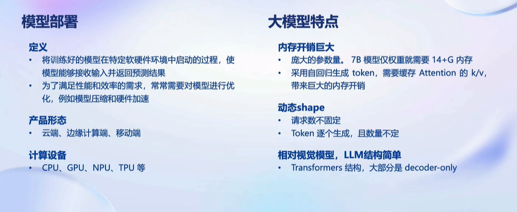
- 大模型部署挑战 & 方案
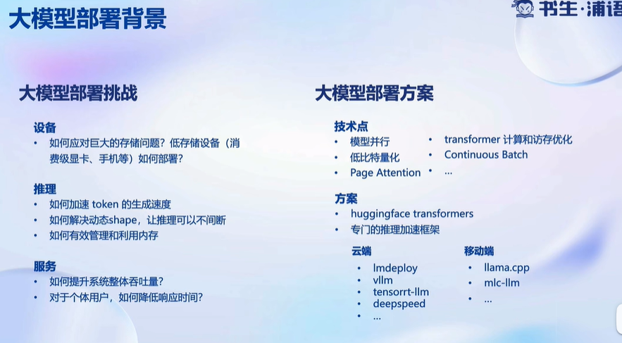
LMDeploy简介
- 概述
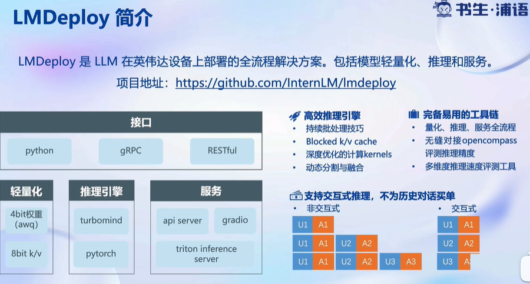
- 推理性能
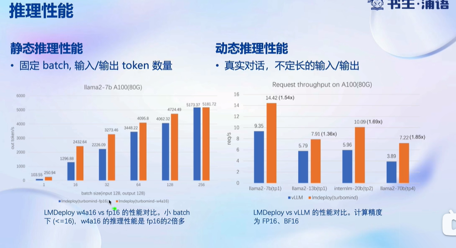
- 核心功能
- 量化
1）为什么要量化？
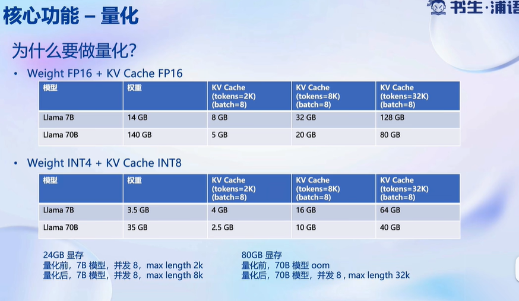
2）为什么要 Weight-only 量化？
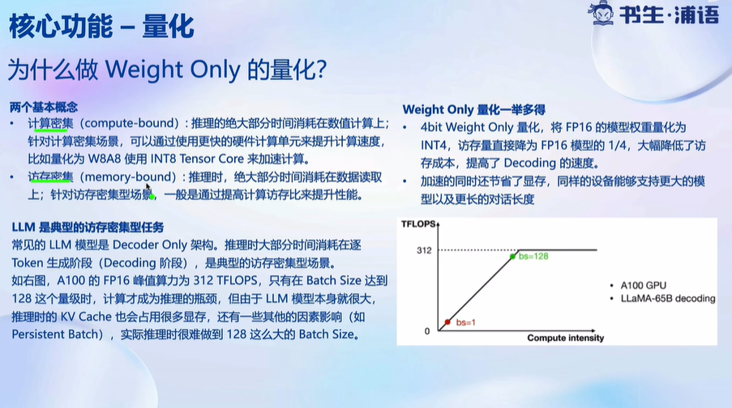
LLM是典型的访存密集型任务，所以进行权重量化不仅可以节省显存，还能降低访存成本，从而提高推理速度（并不是因为算得快）。
3）如何做 Weight-only 量化？
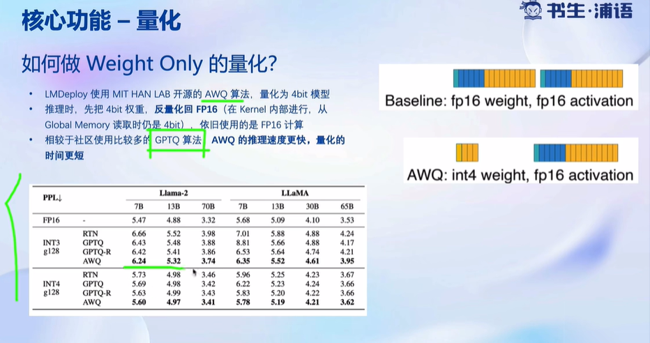
AWQ量化算法思想：仅量化相对次要的参数，对推理性能较为重要的参数不量化，最大限度保证推理性能
- 推理引擎（TurboMind）
1）概述
2）持续批处理
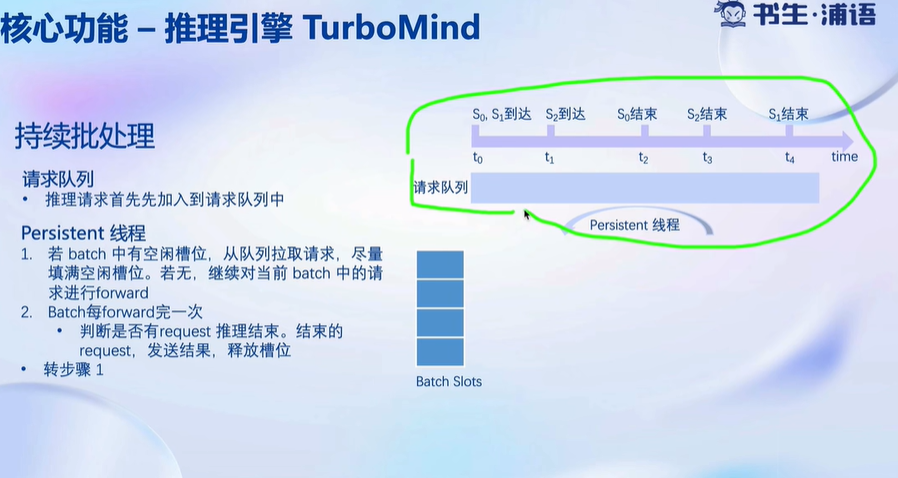
3）有状态推理
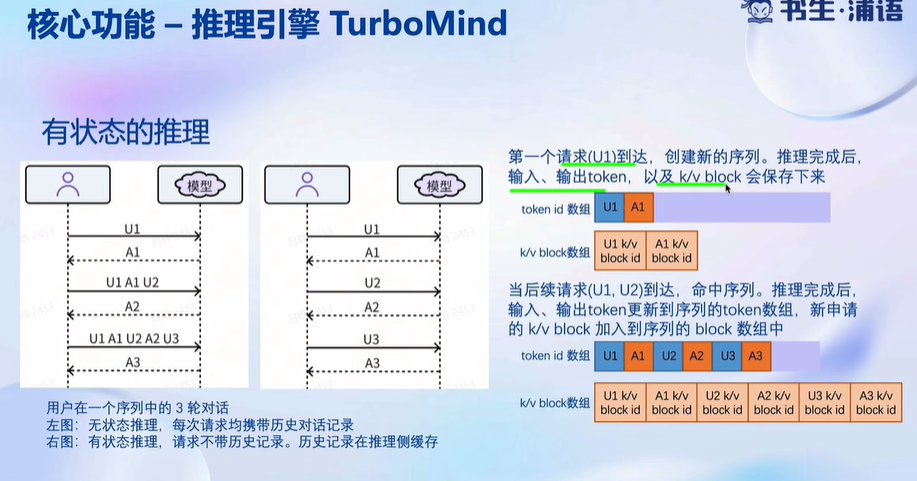
4）Blocked KV Cache
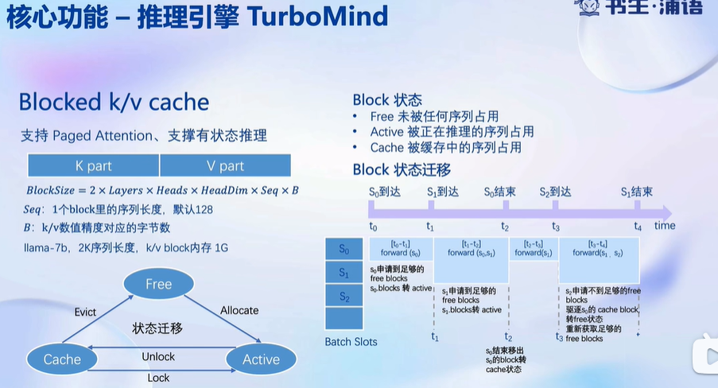
5）高性能Cuda Kernel
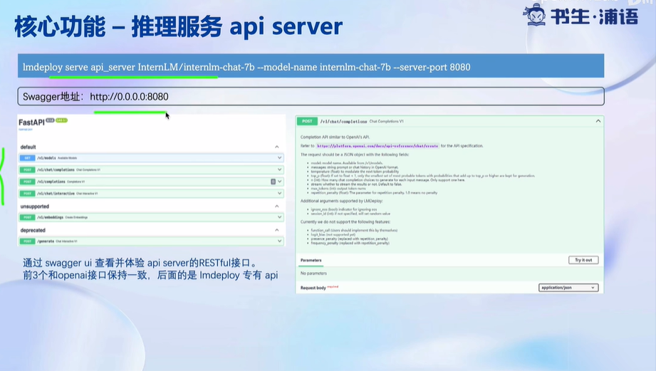
- API Server
动手实践
服务部署
见作业此处
模型量化
KV Cache 量化： 降低生成时显存使用
W4A16量化：降低访存成本
具体过程见作业此处